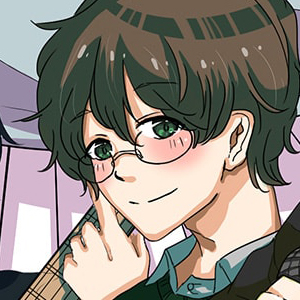
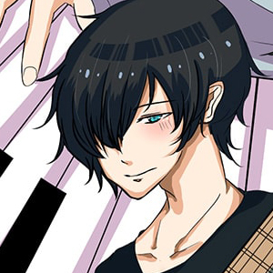
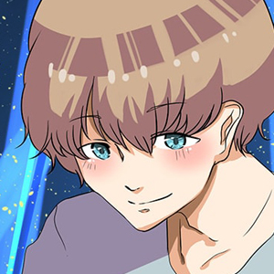

LIVE MEMBER
つきみぐー（Vo）

桂馬（Gt2）
運営コメント：
「BSLive初参加になります。つきみぐーのヴｫｰｶﾙを輝かせるには彼の力が必要だ！と今回はGt&コーラスでの参加を予定してます。歌う人を活かすステージをみんなで一緒に共有出来ると思ってます！」

Showhey（Ba）
運営コメント：
「今回でむでむずの公演より出張してくれますshowheyさんです。浅草蔵Woodでのライブで拝見した時にとても素敵なベースの演奏を展開しておりましたので今回BSLiveへお誘いしました！」

じゅむ（Dr）
運営コメント：
「学生時代からドラムを続けるじゅむさん。今回はVnのPainさんの紹介でBSLiveへ参加してくれます。M3用のオリジナルCDの収録も行っている方です☆」

Pain（Vn）
運営コメント：
「ニコニコ超パーティ等で演奏での参加をしているPainさんが今回BSLiveに参加してくれます。さいたまスーパーアリーナでも演奏したPainさんのヴァイオリンに乞うご期待☆」
運営コメント：
「復活のBSLiveは新しい看板をお迎えしてスタートします。見る人を楽しませるパフォーマンスに溢れるつきみぐーの送る空間を客席の皆さまへ！！」